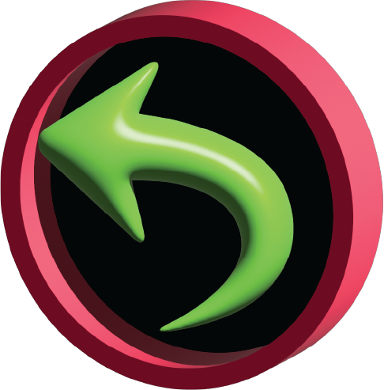

A bulletin board is a public platform. Anyone can stick anything on it, take anything from it, and make the community around the bulletin board be notified. Starbucks is the only place I see bulletin boards today, aside from schools and government buildings. The bulletin board is a culture. One that reminds me of the 90s, one that I never got a chance to experience.
Laurel Schwults defines the website using metaphors. She makes symbolisms around different functions of a web page. According to her a website could be a room, a shelf, a plant, a garden, a puddle, even a “thrown rock that’s now falling deep into the ocean” (Laurel Schwults, 2018). I would like to apply the same kind of metaphorical lens to my practice of designing a “poster” webpage, or as I call it: a bulletin board.
There is a certain feeling of innocence in how a bulletin boards work. You pin something and hope for someone relevant to see it, walk past it, notice it, or search for it. Websites that contain information about a certain function acts the same way. You either click a link that leads you there, or you intentionally search for this and come across the page. Understanding this is crucial to be able to design the information architecture. These websites have very clear functions. Just like a physical flyer.
The UI and UX, along with the graphic design; should be rooted to the content. The content being the primary input for the design, should be the guide to illustrate and catch the essence. The examples I’ll go through right now are all examples to different approaches to such practices.
Cargo Collective (Cargo Site Examples) is a flexible browser based web design tool. Its mainly used by artists and designers, therefore there are many sites that were made with “handmade” in mind. The following examples are made using Cargo.
A fairly straightforward design, with three vertical columns. The exceptionality comes from this simple yet clean approach. The accent colors are taken from the poster design, and a simple animation was added in the middle of the website to increase attention. Font choice is structured and smooth. This website is a perfect bulletin board, with its little form in the middle expecting inputs from visitors, its obvious that this website was made for a specific group of people who will be present at the fair and will want to get news through joining the mail list. There is a clear functionality in mind and the design choices are applied accordingly.
Friends of Museums is a platform that facilitates access to guided museum, gallery and exhibition tours, founded in 1978. Contrasting with its founding date, the design of this website is fairly contemporary and unique. Starting from the cursor design, the user is immediately face to face with a different experience, different then of other Europe based museum websites. The same approach continues with title link font and header design. A small play with words and letters switches between Italian and English. Overall, this website’s way of presenting information transforms the platform’s aesthetic and user base, its young and contemporary and interesting.
Another browser based tool with flexibility in mind is Readymag (Readymag Examples). Readymag serves a similar clientele. The most emminent difference is that Readymag is more beginner friendly with a simpler UI. The following example is made using Readmag.
This website is designed by a graphic designer who designed a typeface to be used while knitting. This very specific information is presented through high contrast graphics and a scroll based layout. Although the font’s use cases are very specific from a graphic standpoint, the website design truly embodies the poster design principles.
Tools like Cargo and Readymag is important for the web to have unique content available to be made using no-code with maximum flexibility. The bulletin board we experience enlarges in quantity and increases in quality because as required skills decrease, the intentionality of design choices increase. Meaning, if a tool is flexible enough, the designer will have the freedom to design even the smallest details for their unique websites. Accessibility of website-making is an issue when the whole internet culture revolves around zero-effort pastime through dumb-scrolling.
press to go back to the index!